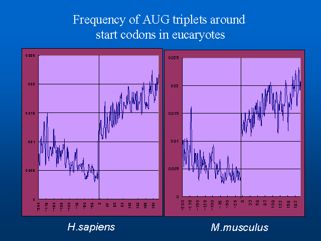
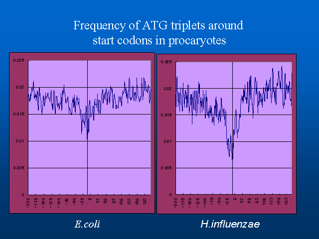
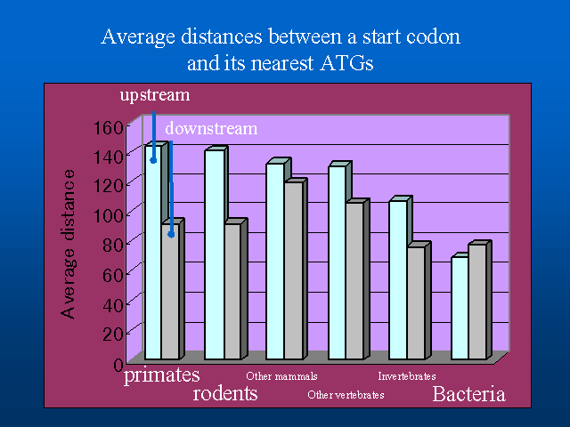

Rintaro Saito+ and Masaru Tomita#
Laboratory for Bioinformatics, Keio University, Endo 5322 Fujisawa Kanagawa Japan
+Graduate School of Media and Governance; rsaito@mag.keio.ac.jp;
#Faculty of Environmental Information; mt@sfc.keio.ac.jp
#Corresponding author
We also computed average distances between a start codon and its nearest upstream-located ATG triplet, and found a general tendency for the average distances to be longer in higher organisms.
Keywords:translation initiation, start codon, AUG triplets, trinucleotide frequency, untranslated region, negative selection
The ribosomes of eucaryotes are known to scan mRNA from left to right(5' to 3') and to initiate translation usually at the first-encountered AUG triplet, although the ribosome sometimes ignores the first AUG and initiates translation at the next found AUG triplet, a phenomenon known as ``leaky scanning''.
In procaryotes, on the other hand, the ribosome binds directly to the Shine-Dalgarno sequence, and translation is initiated at an AUG triplet located several bases downstream of the sequence. If the AUG triplet is not in correct proximity to the Shine-Dalgarno sequences, it does not usually function as a start codon.
The insertion of an AUG triplet upstream of a start codon is reported to reduce the accuracy of the translation initiation at the proper start codon. Yun conducted similar experiments with S.cerevisiae, and reported that AUG triplets closer to the start codon have a higher probability of provoking improper translation initiations. These experimental results predict that AUG triplets near start codons are evolutionarily disadvantageous and thus appear less frequently due to negative selectional pressure.
We have systematically analyzed the frequencies of AUG triplets around start codons in genomes of various species, and found that the frequency of AUG triplets is indeed significantly low around start codons in both procaryotic and eucaryotic genomes. However, their patterns of AUG frequency are quite distinct between those two domains (procaryotes and eucaryotes), presumably because of the differences in their translation initiation mechanisms. We also computed average distances between a start codon and its nearest upstream-located ATG triplet for all genes in GenBank, and found a general tendency for the average distances to be longer in organisms in higher taxonomical groups.
2. Methods
Messenger RNA sequence data for Homo sapiens and Mus musculus were extracted from GenBank files of release 100.0. Sequence of Escherichia coli and Haemophilus influenzae were taken from E.coli Genome Center(University of Wisconsin-Madison) and TIGR microbial database, respectively.
Frequencies of AUG triplets at specific position with respect to start codons were calculated and plotted.
3. Results and Discussion

Figures 1 and 2 show that, in H.sapiens and M.musculus, the frequencies of AUG triplets in 5'UTR are significantly low, while rising sharply in the coding region. It should be noted that AUG frequencies immediately after start codons are also low, although AUG frequencies in 5'UTR are significantly lower. We had similar results in other eucaryotes (data not shown), and these tendencies of AUG frequencies appear across a variety of species.
AUG triplets near a start codon could disturb the ribosome's ability to select the proper start codon. Since ribosomes scan mRNAs from left to right (5' to 3'), AUGs in 5'UTR are probably more disruptive than AUGs in the coding region, and this explains the uneven AUG frequencies between the two sides of the start codon.

Figures 3 and 4 show that, in E.coli and H.influenzae, the AUG frequency decrease around the start codon is not as evident as in eucaryotes, and their decreasing patterns are notably symmetrical. These distinct features in eucaryotes and procaryotes are due presumably to the difference of their translation initiation mechanisms. While the eucaryotic ribosome searches for the start codon by scanning the mRNA from left to right (5' to 3'), the bacterial ribosome is believed to find the start codon at once upon recognizing the Shine-Dalgarno sequence, located several bases upstream of the start codon. Thus, AUG triplets at either side of the start codon could exert an equally disruptive effect on the translation initiation, resulting the symmetric decreases of AUG triplets shown in figures 3 and 4. Also, the bacterial ribosome is probably less sensitive to spurious AUGs around start codons than eucaryotes, because bacterial translation initiation mechanisms, in general, do not have to scan long lengths of mRNA.

Figure 5 shows average distances between a start codon and its nearest ATG triplet located upstream and downstream, respectively. Interestingly, the average distances are generally longer in higher organisms and shorter in lower organisms, as seen in the following order: primates > rodents > other mammals > other vertebrates > invertebrates > bacteria. This rule holds only for upstream ATG triplets but not for downstream ATGs. Higher organisms may have more sophisticated translation initiation machinery and may be more sensitive to spurious AUGs before start codons.
Acknowledgments
This work was supported in part by a Grant-in-Aid for Scientific Research on Priority Areas 'Genome Science' from The Ministry of Education and Science in Japan.
References
1. Gualerzi C., Pon C.Initiation of mRNA Translation in Procaryotes. Biochem. 29,5881(1990)
2. Kozak M.Adherence to the first-AUG rule when a second AUG codon follows closely upon the firs.Proc. Natl. Acad. Sci. USA 92,2662(1995)
3. Yun. D.F. et al.mRNA sequences influencing translation and the selection of AUG initiator codons in the yeast Saccharomyces cerevisiae. Mol.Microbiol. 19(1996)